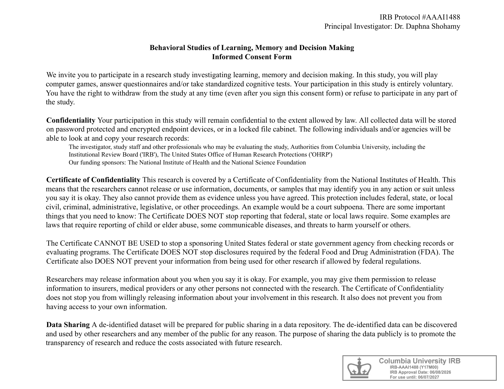
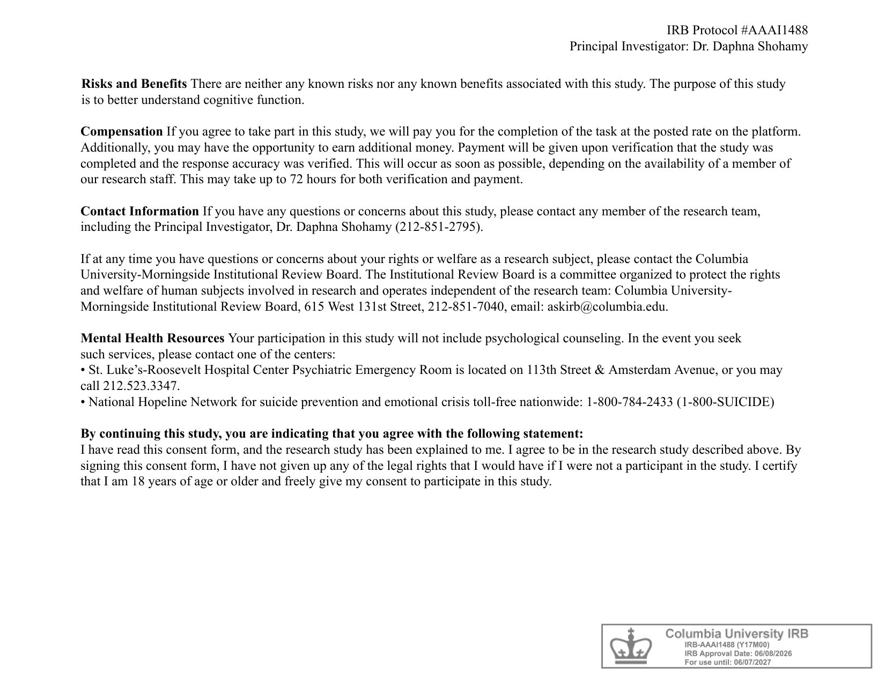

<!DOCTYPE html>
<html>
  <head>
    <meta charset="utf-8">
    <title>Image Value Study</title>
    <style>
      body {
          background-color: #f8f9fa;
          font-family: Arial, sans-serif;
      }

      .stimulus-container {
          width: 800px;
          margin: 0 auto;
          text-align: center;
      }

      .exp-image {
          width: 450px;
          height: 350px;
          object-fit: contain;
          border: 2px solid #ccc;
          background-color: #fff;
          display: block;
          margin: 0 auto;
      }

      .small-image {
          width: 260px;
          height: 210px;
          object-fit: contain;
          border: 2px solid #ccc;
          background-color: #fff;
      }

      .fixation {
          font-size: 60px;
          color: #333;
          height: 400px;
          display: flex;
          align-items: center;
          justify-content: center;
      }

      .question-area {
          height: 80px;
          display: flex;
          align-items: center;
          justify-content: center;
      }

      .practice-box {
          width: 260px;
          height: 200px;
          margin: 0 auto;
          display: flex;
          align-items: center;
          justify-content: center;
          font-size: 22px;
          font-weight: bold;
          color: #fff;
          border-radius: 8px;
      }
    </style>
    <script src="jspsych/plugins/jspsych.js"></script>
    <script src="jspsych/plugins/plugin-instructions.js"></script>
    <script src="jspsych/plugins/plugin-html-button-response.js"></script>
    <script src="jspsych/plugins/plugin-survey-text.js"></script>
    <script src="jspsych/plugins/plugin-html-keyboard-response.js"></script>
    <script src="jspsych/plugins/plugin-fullscreen.js"></script>
    <script src="jspsych/plugins/plugin-preload.js"></script>
    <script src="jspsych/plugins/plugin-call-function.js"></script>
    <link rel="stylesheet" href="jspsych/css/jspsych.css">
  </head>
  <body></body>
  <script>

// ============================================================
// DATA SAVING (same mechanism as base template, with backup)
// ============================================================
var data_folder = 'data/';
var data_already_saved = false;

function saveData(data) {
    if (data_already_saved) {
        console.log("saveData already called once, skipping duplicate call.");
        return;
    }
    data_already_saved = true;

    console.log("Starting saveData...");
    fetch('/write_data.php', {
        method: 'POST',
        headers: { 'Content-Type': 'application/json' },
        body: JSON.stringify({ filedata: data })
    })
    .then(response => {
        if (!response.ok) {
            throw new Error('Network response was not ok: ' + response.status);
        }
        return response.text().then(text => {
            try {
                return JSON.parse(text);
            } catch (e) {
                return { success: true, raw: text };
            }
        });
    })
    .then(result => {
        console.log("Success! Data saved to server.", result);
    })
    .catch(error => {
        console.error("Error saving data to server:", error);
        try {
            var backupKey = 'experiment_backup_' + participant_id + '_' + Date.now();
            localStorage.setItem(backupKey, data);
            console.log("Data saved locally to localStorage with key:", backupKey);
            alert("Data saved locally. Please do not close this window.");
        } catch (storageError) {
            console.error("Error saving to localStorage:", storageError);
            alert("Warning: Could not save data to server or locally. Please do not close this window and contact support.");
        }
    });
}

var jsPsych = initJsPsych({
    on_finish: function() {
        console.log("Experiment timeline finished (on_finish).");
        saveData(jsPsych.data.get().csv());
    }
});

var timeline = [];

var participant_id = jsPsych.data.getURLVariable('participantId') || jsPsych.randomization.randomID(15);
var study_id = jsPsych.data.getURLVariable('assignmentId');
var session_id = jsPsych.data.getURLVariable('projectId');

jsPsych.data.addProperties({
    subject_id: participant_id,
    study_id: study_id,
    session_id: session_id,
    experiment: 'CauseEffect_Value_Spreading_Pilot'
});

// ============================================================
// STIMULUS FOLDER & FILE NAMING
// Images live in "images_value/" as:
//   case_01.png ... case_24.png    (the CAUSE image of each pair)
//   effect_01.png ... effect_24.png (the EFFECT image of each pair)
// ============================================================
var NUM_PAIRS = 24;
var STIM_FOLDER = 'images_value/';

// Actual uploaded files: Cause_01.jpg..Cause_03.jpg then Cause_04.png..Cause_24.png
// (same pattern for Effect_XX). Extension is looked up per pair number below.
var JPG_PAIR_NUMBERS = [1, 2, 3];

function pad2(n) {
    return n < 10 ? '0' + n : '' + n;
}

function getExt(n) {
    return JPG_PAIR_NUMBERS.indexOf(n) !== -1 ? '.jpg' : '.png';
}

function getCausePath(n) {
    return STIM_FOLDER + 'Cause_' + pad2(n) + getExt(n);
}

function getEffectPath(n) {
    return STIM_FOLDER + 'Effect_' + pad2(n) + getExt(n);
}

// ============================================================
// BUILD THE 24 PAIRS
// ============================================================
var all_pairs = [];
for (var i = 1; i <= NUM_PAIRS; i++) {
    all_pairs.push({
        pair_id: i,
        cause_path: getCausePath(i),
        effect_path: getEffectPath(i)
    });
}

// ------------------------------------------------------------
// Assign each pair to ONE of 4 cells (6 pairs per cell):
//   cause_reward | cause_neutral | effect_reward | effect_neutral
// This determines which member of the pair gets shown+rewarded
// in Phase 2 (Controlled Exposure).
// ------------------------------------------------------------
var shuffled_for_cells = jsPsych.randomization.shuffle(all_pairs.slice());
var cell_size = NUM_PAIRS / 4; // 6
var cell_labels = ['cause_reward', 'cause_neutral', 'effect_reward', 'effect_neutral'];

shuffled_for_cells.forEach(function(pair, idx) {
    var cell_idx = Math.floor(idx / cell_size);
    var cell = cell_labels[cell_idx];
    pair.cell = cell;
    pair.exposed_role = cell.indexOf('cause') === 0 ? 'cause' : 'effect';
    pair.reward_condition = cell.endsWith('reward') ? 'reward' : 'neutral';
    pair.exposed_path = (pair.exposed_role === 'cause') ? pair.cause_path : pair.effect_path;
    // the member NOT shown in Phase 2 - this is the critical test item for Phase 3
    pair.critical_path = (pair.exposed_role === 'cause') ? pair.effect_path : pair.cause_path;
    pair.critical_role = (pair.exposed_role === 'cause') ? 'effect' : 'cause';
});

// ============================================================
// PRELOAD
// ============================================================
var imagesToPreload = [
    'images/consent_form_2026_page1.png',
    'images/consent_form_2026_page2.png',
    'images/gray.png',
    'images/dollar.png'
];

all_pairs.forEach(function(p) {
    imagesToPreload.push(p.cause_path);
    imagesToPreload.push(p.effect_path);
});

var practice_pairs = [
   { name: 'the_performance_causal', type: 'causal_sequence', e1: 1, e2: 2 },
   { name: 'museum_causal', type: 'causal_sequence', e1: 3, e2: 4 }
];

function getPracticeImagePath(block, idx) {
    return `images/${block.type}/${block.name}/${block.name}_${idx}.png`;
}

practice_pairs.forEach(function(p) {
    imagesToPreload.push(getPracticeImagePath(p, 1));
    imagesToPreload.push(getPracticeImagePath(p, 2));
});

timeline.push({
    type: jsPsychPreload,
    images: imagesToPreload,
    message: 'Loading task assets...'
});

// ============================================================
// SHARED HELPERS
// ============================================================

// Simple 3-option math question, shown a handful of times through the
// experiment (not framed as an "attention check" to the participant).
function mathQuestionTrial() {
    var a = Math.floor(Math.random() * 8) + 1;
    var b = Math.floor(Math.random() * 8) + 1;
    var correct = a + b;
    var distractor1 = correct + 1;
    var distractor2 = (correct - 1 <= 0) ? correct + 2 : correct - 1;
    var options = jsPsych.randomization.shuffle([correct, distractor1, distractor2]);
    var correct_option_index = options.indexOf(correct);

    return {
        type: jsPsychHtmlButtonResponse,
        stimulus: '<div style="font-size:24px;">What is ' + a + ' + ' + b + ' ?</div>',
        choices: options.map(String),
        data: { task: 'math_question', correct_answer: correct },
        on_finish: function(data) {
            data.correct = (data.response === correct_option_index) ? 1 : 0;
        }
    };
}

var whiteScreenTrial = {
    type: jsPsychHtmlKeyboardResponse,
    stimulus: '<div style="background-color: white; width: 100vw; height: 100vh;"></div>',
    choices: "NO_KEYS",
    trial_duration: 1000
};

var fixationTrial = {
    type: jsPsychHtmlKeyboardResponse,
    stimulus: '<div class="fixation">+</div>',
    choices: "NO_KEYS",
    trial_duration: 1000
};

// Wraps a jsPsychInstructions trial so its navigation buttons stay
// disabled for `minMs` (default 10000ms), forcing a minimum reading
// time before the participant can click through to the next stage.
// A small countdown notice is shown while buttons are disabled.
function withMinReadTime(instructionsTrial, minMs) {
    minMs = (typeof minMs === 'number') ? minMs : 10000;
    var trial = Object.assign({}, instructionsTrial);
    var original_on_load = trial.on_load;

    trial.on_load = function() {
        if (original_on_load) { original_on_load(); }

        function getNavButtons() {
            return document.querySelectorAll(
                '#jspsych-instructions-back, #jspsych-instructions-next, #jspsych-instructions-nav button, .jspsych-btn'
            );
        }

        var buttons = getNavButtons();
        buttons.forEach(function(btn) {
            btn.disabled = true;
            btn.style.opacity = '0.4';
            btn.style.cursor = 'not-allowed';
        });

        var contentEl = document.querySelector('.jspsych-content') || document.body;
        var notice = document.createElement('div');
        notice.id = 'min-read-notice';
        notice.style.cssText = 'text-align:center; color:#888; font-size:14px; margin-top:15px;';
        var remaining = Math.ceil(minMs / 1000);
        notice.innerText = 'Please take a moment to read (you can continue in ' + remaining + 's)...';
        contentEl.appendChild(notice);

        var countdownInterval = setInterval(function() {
            remaining -= 1;
            if (notice) {
                notice.innerText = remaining > 0
                    ? 'Please take a moment to read (you can continue in ' + remaining + 's)...'
                    : '';
            }
            if (remaining <= 0) { clearInterval(countdownInterval); }
        }, 1000);

        setTimeout(function() {
            getNavButtons().forEach(function(btn) {
                btn.disabled = false;
                btn.style.opacity = '1';
                btn.style.cursor = 'pointer';
            });
            if (notice && notice.parentNode) { notice.parentNode.removeChild(notice); }
        }, minMs);
    };

    return trial;
}

// Runs all trials for a phase, inserting exactly ONE math question after
// the item at `checkAfterPosition` (1-based), if provided. Used to keep
// the total math-question count at exactly 4 across the whole experiment.
function pushPhase(sourceArray, trialBuilderFn, checkAfterPosition) {
    sourceArray.forEach(function(item, idx) {
        timeline = timeline.concat(trialBuilderFn(item));
        if (checkAfterPosition && (idx + 1) === checkAfterPosition) {
            timeline.push(mathQuestionTrial());
        }
    });
}

// Shows one image; after `delayMs` (default 4000ms) a short question
// fades in BELOW the same image (same screen, not a separate page),
// and only then can the participant click Yes/No to continue.
function buildImageWithDelayedQuestionTrial(imagePath, dataObj, delayMs) {
    delayMs = (typeof delayMs === 'number') ? delayMs : 4000;
    return {
        type: jsPsychHtmlButtonResponse,
        stimulus: '<div class="stimulus-container">' +
                   '' +
                   '<div class="question-area" id="delayed-question" style="visibility:hidden; margin-top:15px;">' +
                   '<p style="font-size:20px; font-weight:bold;">Does a person appear in this image, or does the word "person" appear as text?</p>' +
                   '</div></div>',
        choices: ['Yes', 'No'],
        data: dataObj,
        on_load: function() {
            var btnGroup = document.querySelector('#jspsych-html-button-response-btngroup');
            if (btnGroup) { btnGroup.style.visibility = 'hidden'; }
            setTimeout(function() {
                var q = document.querySelector('#delayed-question');
                if (q) { q.style.visibility = 'visible'; }
                var bg = document.querySelector('#jspsych-html-button-response-btngroup');
                if (bg) { bg.style.visibility = 'visible'; }
            }, delayMs);
        }
    };
}

// ============================================================
// INSTRUCTIONS & CONSENT
// ============================================================
timeline.push(withMinReadTime({
    type: jsPsychInstructions,
    pages: [
        '<div style="text-align: left; padding: 40px; font-family: Arial;">' +
        '<h2>Welcome to the Experiment</h2>' +
        '<p>In this study you will see pairs of images and answer short questions about them. Some images will also have a monetary value.</p>' +
        '<p>The experiment has several short parts, beginning with a brief practice round.</p>' +
        '<p>Click "Next" to read the consent form.</p>' +
        '</div>',
        '<div style="text-align: center; padding: 20px;">' +
        '</img>' +
        '</div>',
        '<div style="text-align: center; padding: 20px;">' +
        '</img>' +
        '</div>'
    ],
    show_clickable_nav: true
}));

timeline.push({
    type: jsPsychFullscreen,
    fullscreen_mode: true
});

// ============================================================
// PRACTICE PHASE
// EFFECT FIRST, THEN CAUSE
// ============================================================
timeline.push(withMinReadTime({
    type: jsPsychInstructions,
    pages: [
        '<div style="text-align: left; padding: 40px; font-family: Arial;">' +
        '<h2>Practice Round</h2>' +
        '<p>We will now go through a short practice round so you can get familiar with the task.</p>' +
        '<p>In each trial, a first image will appear for a few seconds, followed by a question, then a second image, followed by another question.</p>' +
        '<p>Please look at each image carefully and answer the questions that follow.</p>' +
        '</div>'
    ],
    show_clickable_nav: true
}));

practice_pairs.forEach(function(p) {
    var img1 = getPracticeImagePath(p, 1);
    var img2 = getPracticeImagePath(p, 2);

    // CHANGED ORDER: EFFECT (img2) FIRST, THEN CAUSE (img1)
    timeline.push(buildImageWithDelayedQuestionTrial(img2, { task: 'practice_item2', folder: p.name }));
    timeline.push(fixationTrial);
    timeline.push(buildImageWithDelayedQuestionTrial(img1, { task: 'practice_item1', folder: p.name }));
    timeline.push(whiteScreenTrial);
});

timeline.push(withMinReadTime({
    type: jsPsychInstructions,
    pages: [
        '<div style="text-align: left; padding: 40px; font-family: Arial;">' +
        '<h2>Practice Completed</h2>' +
        '<p>Great! The main experiment is about to begin. Please stay focused on the screen throughout.</p>' +
        '</div>'
    ],
    show_clickable_nav: true
}));

// ============================================================
// PHASE 1: ENCODING
// Each of the 24 pairs is shown in full:
// EFFECT image first, then CAUSE image.
// Each for 4 seconds, each followed by a short "person in image?"
// question. Order is randomized per participant.
// ============================================================
timeline.push(withMinReadTime({
    type: jsPsychInstructions,
    pages: [
        '<div style="text-align: left; padding: 40px; font-family: Arial;">' +
        '<h2>Phase 1: Image Viewing</h2>' +
        '<p>You will see 24 pairs of images, one after another. Each pair shows two images, one followed by the other.</p>' +
        '<p>Please view each image carefully. After each image, answer a short question about it.</p>' +
        '</div>'
    ],
    show_clickable_nav: true
}));

var encoding_order = jsPsych.randomization.shuffle(all_pairs.slice());

function buildEncodingTrials(pair) {
    return [
        // CHANGED ORDER: EFFECT FIRST
        buildImageWithDelayedQuestionTrial(
            pair.effect_path,
            { task: 'encoding_effect', pair_id: pair.pair_id }
        ),
        fixationTrial,

        // THEN CAUSE
        buildImageWithDelayedQuestionTrial(
            pair.cause_path,
            { task: 'encoding_cause', pair_id: pair.pair_id }
        ),
        whiteScreenTrial
    ];
}

pushPhase(encoding_order, buildEncodingTrials, 12);

// ============================================================
// PHASE 2: CONTROLLED EXPOSURE
// Only ONE member of each pair is shown (per its assigned cell),
// followed by a reward (💰) or neutral (◆) outcome. Order is
// randomized and independent of the encoding order.
// ============================================================
timeline.push(withMinReadTime({
    type: jsPsychInstructions,
    pages: [
        '<div style="text-align: left; padding: 40px; font-family: Arial;">' +
        '<h2>Phase 2</h2>' +
        '<p>You will now see some of the images again, one at a time.</p>' +
        '<p><b>Press the SPACEBAR</b> to reveal what that image is worth.</p>' +
        '<p><span style="color:green; font-weight:bold;">$</span> = This image is worth $1</p>' +
        '<p><span style="color:gray; font-weight:bold;">&#9670;</span> = This image is worth $0</p>' +
        '</div>'
    ],
    show_clickable_nav: true
}));

var exposure_order = jsPsych.randomization.shuffle(all_pairs.slice());

function buildExposureTrials(pair) {
    var is_rewarded = pair.reward_condition === 'reward';
    var reward_img = is_rewarded ? 'images/dollar.png' : 'images/gray.png';
    var reward_txt = is_rewarded ? 'This image is worth $1' : 'This image is worth $0';
    var reward_clr = is_rewarded ? 'green' : 'gray';

    return [
        {
            type: jsPsychHtmlKeyboardResponse,
            stimulus: '<div class="stimulus-container">' +
                       '<p style="font-size: 22px; margin-top: 20px; font-weight: bold;">Press SPACEBAR to reveal this image\'s value</p></div>',
            choices: [' '],
            data: {
                task: 'exposure_wait',
                pair_id: pair.pair_id,
                exposed_role: pair.exposed_role,
                reward_condition: pair.reward_condition,
                cell: pair.cell
            }
        },
        {
            type: jsPsychHtmlKeyboardResponse,
            stimulus: '<div class="stimulus-container" style="display:flex; align-items:center; justify-content:center; gap:30px;">' +
                       '' +
                       '<div>' +
                       '<p style="color:' + reward_clr + '; font-weight:bold; font-size:22px;">' + reward_txt + '</p></div></div>',
            choices: "NO_KEYS",
            trial_duration: 3000,
            data: {
                task: 'exposure_feedback',
                pair_id: pair.pair_id,
                exposed_role: pair.exposed_role,
                reward_condition: pair.reward_condition,
                cell: pair.cell
            }
        },
        whiteScreenTrial
    ];
}

pushPhase(exposure_order, buildExposureTrials, 12);

// ============================================================
// PHASE 3: DECISION (forced choice)
// This now includes BOTH test types from Wimmer & Shohamy (2012),
// always as a direct reward-vs-neutral comparison within the SAME role:
//
//   INDIRECT test (the never-directly-shown "critical" item of each
//   pair - mirrors their S1+ vs S1- test):
//     - 6 trials: an unseen CAUSE whose effect-partner was REWARDED
//                 vs. an unseen CAUSE whose effect-partner was NEUTRAL
//     - 6 trials: an unseen EFFECT whose cause-partner was REWARDED
//                 vs. an unseen EFFECT whose cause-partner was NEUTRAL
//
//   DIRECT test (the item that WAS shown with its $1/$0 value in
//   Phase 2 - mirrors their S2+ vs S2- test, a manipulation check
//   that basic reward learning worked):
//     - 6 trials: a REWARDED cause vs. a NEUTRAL cause (both exposed)
//     - 6 trials: a REWARDED effect vs. a NEUTRAL effect (both exposed)
//
// 24 choices total (12 indirect + 12 direct). Both test types compare
// reward-linked vs neutral-linked items head-to-head, never against an
// unrelated pair.
// ============================================================
timeline.push(withMinReadTime({
    type: jsPsychInstructions,
    pages: [
        '<div style="text-align: left; padding: 40px; font-family: Arial;">' +
        '<h2>Phase 3: Decision</h2>' +
        '<p>You will now see pairs of images side by side.</p>' +
        '<p>Follow your gut feeling and choose the image you feel is <b>more valuable</b>, or that you intuitively prefer.</p>' +
        '</div>'
    ],
    show_clickable_nav: true
}));

// critical_role is the OPPOSITE of exposed_role (see cell assignment above):
// pairs exposed on the cause -> critical item is the effect, and vice versa.
var cause_critical_items = all_pairs.filter(function(p) { return p.critical_role === 'cause'; });
var effect_critical_items = all_pairs.filter(function(p) { return p.critical_role === 'effect'; });

// exposed_role groups - these are the items that WERE shown with their
// $1/$0 value in Phase 2. Used for the new DIRECT test.
var cause_exposed_items = all_pairs.filter(function(p) { return p.exposed_role === 'cause'; });
var effect_exposed_items = all_pairs.filter(function(p) { return p.exposed_role === 'effect'; });

// Builds 6 direct reward-vs-neutral trials for one role group (12 items ->
// 6 reward, 6 neutral). `pathField` selects which image to use per pair:
// 'critical_path' for the indirect test, 'exposed_path' for the direct test.
function buildComparisonSet(roleGroup, comparisonRole, testType, pathField) {
    var reward_items = jsPsych.randomization.shuffle(
        roleGroup.filter(function(p) { return p.reward_condition === 'reward'; })
    );
    var neutral_items = jsPsych.randomization.shuffle(
        roleGroup.filter(function(p) { return p.reward_condition === 'neutral'; })
    );

    // reward_items.length === neutral_items.length === 6 by design (6 pairs per cell)
    return reward_items.map(function(rewardPair, idx) {
        var neutralPair = neutral_items[idx];
        return {
            test_type: testType, // 'direct' or 'indirect'
            comparison_role: comparisonRole, // 'cause' or 'effect'
            reward_pair_id: rewardPair.pair_id,
            reward_path: rewardPair[pathField],
            neutral_pair_id: neutralPair.pair_id,
            neutral_path: neutralPair[pathField]
        };
    });
}

// Combine all 4 sets (indirect-cause, indirect-effect, direct-cause,
// direct-effect), then shuffle overall order so everything is
// interleaved unpredictably for the participant.
var decision_trials = jsPsych.randomization.shuffle(
    buildComparisonSet(cause_critical_items, 'cause', 'indirect', 'critical_path').concat(
        buildComparisonSet(effect_critical_items, 'effect', 'indirect', 'critical_path'),
        buildComparisonSet(cause_exposed_items, 'cause', 'direct', 'exposed_path'),
        buildComparisonSet(effect_exposed_items, 'effect', 'direct', 'exposed_path')
    )
);

function buildDecisionTrials(dt) {
    return [
        {
            type: jsPsychHtmlKeyboardResponse,
            stimulus: function() {
                var reward_left = Math.random() < 0.5;
                window.current_decision = {
                    reward_left: reward_left,
                    test_type: dt.test_type,
                    comparison_role: dt.comparison_role,
                    reward_pair_id: dt.reward_pair_id,
                    neutral_pair_id: dt.neutral_pair_id
                };
                var left_img = reward_left ? dt.reward_path : dt.neutral_path;
                var right_img = reward_left ? dt.neutral_path : dt.reward_path;
                window.current_left_img = left_img;
                window.current_right_img = right_img;
                return '<div style="font-family: Arial; margin-bottom: 20px;"><h3>Which image is <b>more valuable</b>?</h3></div>' +
                       '<div class="stimulus-container" style="display: flex; justify-content: center; gap: 30px;">' +
                       '</div>';
            },
            choices: "NO_KEYS",
            trial_duration: 2500
        },
        {
            type: jsPsychHtmlButtonResponse,
            stimulus: function() {
                return '<div style="font-family: Arial; margin-bottom: 20px;"><h3>Which image is <b>more valuable</b>?</h3></div>' +
                       '<div class="stimulus-container" style="display: flex; justify-content: center; gap: 30px;">' +
                       '</div>';
            },
            choices: ['Left', 'Right'],
            data: { task: 'decision_choice' },
            on_finish: function(data) {
                var c = window.current_decision;
                data.test_type = c.test_type;
                data.comparison_role = c.comparison_role;
                data.reward_pair_id = c.reward_pair_id;
                data.neutral_pair_id = c.neutral_pair_id;
                data.chose_reward = ((data.response === 0 && c.reward_left) ||
                                      (data.response === 1 && !c.reward_left)) ? 1 : 0;
            }
        },
        {
            type: jsPsychHtmlKeyboardResponse,
            stimulus: '<div style="background-color: white; width: 100vw; height: 100vh;"></div>',
            choices: "NO_KEYS",
            trial_duration: 800
        }
    ];
}

pushPhase(decision_trials, buildDecisionTrials, 12);

// ============================================================
// PHASE 4: CONTROL (memory + causal strength rating)
// ============================================================
timeline.push(withMinReadTime({
    type: jsPsychInstructions,
    pages: [
        '<div style="text-align: left; padding: 40px; font-family: Arial;">' +
        '<h2>Phase 4: Final Questions</h2>' +
        '<p>First, for each image you will pick the matching image from a few options.</p>' +
        '<p>Then, for each pair you will rate how much the first image caused the second.</p>' +
        '</div>'
    ],
    show_clickable_nav: true
}));

// ---- 4a: Memory test ----
var memory_order = jsPsych.randomization.shuffle(
    all_pairs.filter(function(p) { return p.pair_id <= 6; })
);

function buildMemoryTrial(pair) {
    var foil_pool = all_pairs.filter(function(p) { return p.pair_id !== pair.pair_id; });
    var foil_sample = jsPsych.randomization.sampleWithoutReplacement(foil_pool, 3);
    var option_paths = jsPsych.randomization.shuffle(
        [pair.effect_path].concat(foil_sample.map(function(p) { return p.effect_path; }))
    );
    var correct_index = option_paths.indexOf(pair.effect_path);
    var option_labels = option_paths.map(function(p, i) { return 'Option ' + (i + 1); });

    var options_html = option_paths.map(function(p, i) {
        return '<div style="text-align:center;"><br>' +
               '<span style="font-weight:bold;">Option ' + (i + 1) + '</span></div>';
    }).join('');

    return [
        {
            type: jsPsychHtmlKeyboardResponse,
            stimulus: '<div class="stimulus-container">' +
                       '<p style="font-size: 18px; margin-top: 15px;">Remember this image. Its matching image is one of the options on the next screen.</p></div>',
            choices: "NO_KEYS",
            trial_duration: 2000
        },
        {
            type: jsPsychHtmlButtonResponse,
            stimulus: '<div class="stimulus-container">' +
                       '<p style="font-size: 18px; margin-top: 15px; font-weight:bold;">Which image matches this one?</p></div>' +
                       '<div style="display:flex; justify-content:center; gap:15px; flex-wrap:wrap; margin-top:10px;">' + options_html + '</div>',
            choices: option_labels,
            data: { task: 'memory_test', pair_id: pair.pair_id, correct_index: correct_index },
            on_finish: function(data) {
                data.correct = (data.response === correct_index) ? 1 : 0;
            }
        },
        whiteScreenTrial
    ];
}

pushPhase(memory_order, buildMemoryTrial, 3);

// ---- 4b: Causal strength rating ----
var rating_order = jsPsych.randomization.shuffle(all_pairs.slice());

function buildRatingTrial(pair) {
    return [
        {
            type: jsPsychHtmlButtonResponse,
            stimulus: '<div class="stimulus-container" style="display:flex; justify-content:center; gap:30px;">' +
                       '</div>' +
                       '<p style="font-size: 20px; font-weight: bold; margin-top: 20px;">How much did the first image cause the second?<br>' +
                       '<span style="font-weight:normal; font-size:16px;">(1 = did not cause it at all, 10 = completely caused it)</span></p>',
            choices: ['1', '2', '3', '4', '5', '6', '7', '8', '9', '10'],
            data: { task: 'causal_strength_rating', pair_id: pair.pair_id },
            on_finish: function(data) {
                data.rating = (data.response !== null) ? data.response + 1 : null;
            }
        },
        whiteScreenTrial
    ];
}

pushPhase(rating_order, buildRatingTrial, null);

// ============================================================
// DEMOGRAPHICS
// ============================================================
timeline.push({
    type: jsPsychSurveyText,
    questions: [
        { prompt: 'Gender (MALE / FEMALE / OTHER):', name: 'gender', rows: 1, columns: 20 },
        { prompt: 'Age:', name: 'age', rows: 1, columns: 5 },
        { prompt: 'Did you notice any pattern in how the values were assigned to images? If so, describe it.', name: 'reward_strategy', rows: 2, columns: 50 },
        { prompt: 'How did you choose between images in the "more valuable" part?', name: 'strategy', rows: 2, columns: 50 }
    ],
    data: { task: 'demographics' }
});

// ============================================================
// SAVE DATA (before the final screen, as a safety net)
// ============================================================
timeline.push({
    type: jsPsychCallFunction,
    func: function() {
        console.log("Reached end of real trials, saving data now (before final screen)...");
        saveData(jsPsych.data.get().csv());
    }
});

// ============================================================
// END OF EXPERIMENT
// ============================================================
timeline.push({
    type: jsPsychInstructions,
    pages: [
        '<div style="text-align: center; padding: 60px; font-family: Arial;">' +
        '<h2>Experiment Completed</h2>' +
        '<p style="font-size: 20px; margin-top: 20px;">You have successfully finished the study.</p>' +
        '<p style="font-size: 22px; color: #28a745; font-weight: bold; margin-top: 30px;">Thank you very much for your participation!</p>' +
        '<p style="font-size: 16px; color: #666; margin-top: 40px;">Your data has already been saved. You may now safely close this window or return to the platform.</p>' +
        '</div>'
    ],
    show_clickable_nav: true
});

jsPsych.run(timeline);

  </script>
</html>
